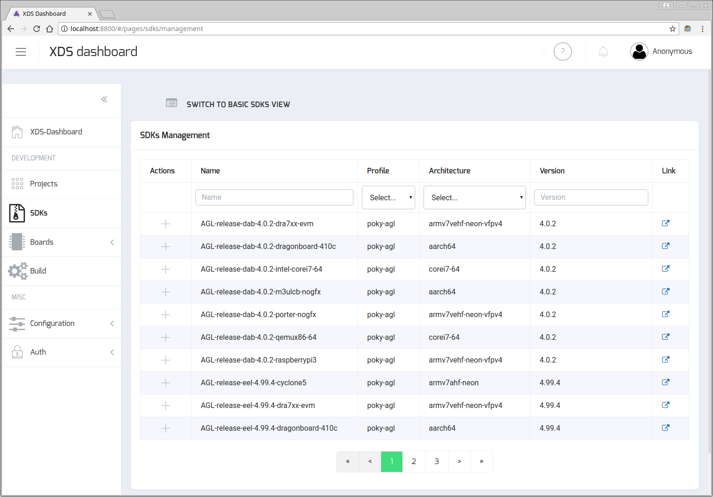
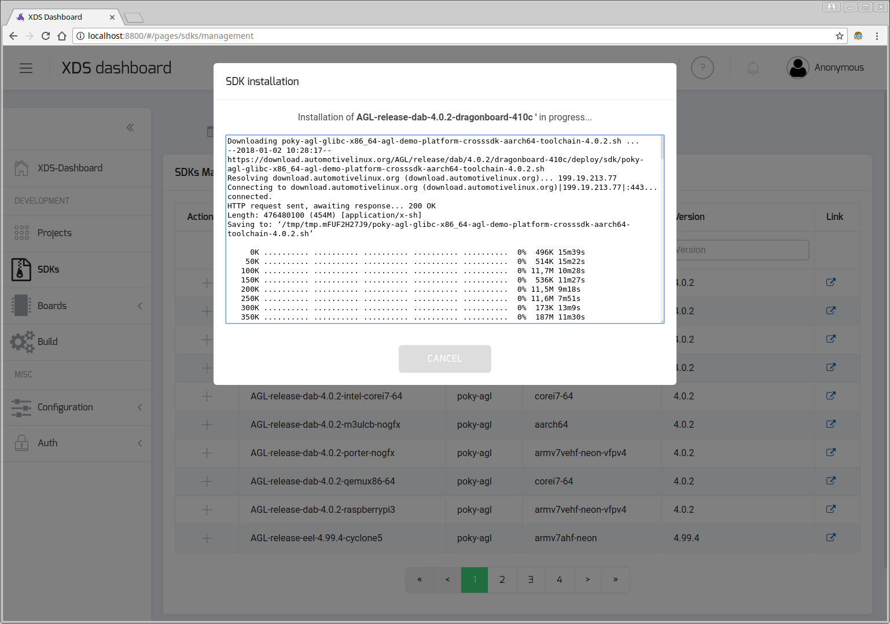

XDS - X(cross) Development System Server
xds-server is a web server that allows user to remotely cross build applications.
- The first goal is to provide a multi-platform cross development tool with near-zero installation.
- The second goal is to keep application sources locally (on user’s machine).
- Make it compatible with existing IT policies (e.g. corporate backup or SCM).
- Let user to continue to work as usual.
- Use his favorite editor.
- keep performance while editing/browsing sources.
- Avoids manual operation
This powerful and portable webserver (written in Go) exposes a REST interface over HTTP.
xds-server uses Syncthing tool to synchronize
projects files from user machine to build server machine or container.
xds-server is commonly running on a build server (within a container or not)
and xds-agent must run on the developer/user machine in order
to setup the following connection chain:
developer/user machine | build server or container
---------------------------|-----------------------------
xds-cli <---> xds-agent <-|-> xds-server
SEE ALSO: xds-cli,
a command-line tool that allows you to send commands to xds-agent / xds-server
and for example build your application from command-line or from your favorite
IDE (such as Netbeans or Visual Studio Code) through xds-agent <=> xds-server.
How to run
xds-server has been designed to easily compile and debug
AGL applications. That’s why xds-server has
been integrated into AGL SDK docker container.
Note: For more info about AGL SDK docker container, please refer to AGL SDK Quick Setup
Start xds-server within the container
See Installation based on Docker container chapter.
Manually Start XDS server
XDS server is started as a service by Systemd.
/lib/systemd/system/xds-server.service
This Systemd service starts a bash script
/opt/AGL/xds/server/xds-server-start.sh
If needed you can change default setting by defining specific environment variables file
ssh -t -p 2222 devel@localhost vim /etc/default/xds-server
For example to control log level, just set LOG_LEVEL env variable.
knowing that supported level are:
- panic
- fatal
- error
- warn
- info
- debug
docker exec ${CONTAINER_NAME} bash -c "echo 'LOG_LEVEL=debug' >> /etc/default/xds-server"
ssh -p 2222 devel@localhost -- "systemctl --user restart xds-server"
SDK cross-toolchain Management
Setup to add support of a new SDK family
Optional step: read this chapter only if you plan to add a new SDK family.
xds-server dynamically detects supported SDKs by scanning sub-directories of
sdkScriptsDir directory (see Configuration chapter).
Each sub-directory (usually name is the same as the SDK family) of sdkScriptsDir
must contain a set of scripts that will be called by xds-server to managed SDKs
of a specific family.
These scripts are:
add: used to add/install a new SDKdb-dump: returned the list of available and installed SDKs (JSON format)db-update: update SDKs databaseget-family-config: returned SDK family configuration structure (JSON format)get-sdk-info: extract SDK info (JSON format) from a SDK file/tarballremove: used to remove an existing SDK
For example, here 2 SDKs family (agl and zephyr) are defined:
# > tree ./sdks/
./sdks/
├── agl
│ ├── add
│ ├── db-dump
│ ├── db-update
│ ├── get-family-config
│ ├── get-sdk-info
│ └── remove
├── README.md
└── zephyr
├── add
│ ├── db-dump
│ ├── db-update
│ ├── get-family-config
│ ├── get-sdk-info
└── remove
On startup xds-server will call in order:
sdks/*/get-family-configto get configuration of each SDK family.sdks/*/db-dumpscripts to get the initial list of available and installed SDKs.
Please refer to sdks/README.md for more information about scripts definition
and to understand how to add support of a new SDK family.
Install a new SDK from command line
Used sdks command of xds-cli tool to managed SDKs.
# List all available SDKs
xds-cli sdks ls -a
List of available SDKs:
ID NAME STATUS VERSION ARCH
ec15afe0 AGL-release-eel-4.99.4-raspberrypi3 Not Installed 4.99.4 armv7vehf-neon-vfpv4
944d2d5a AGL-snapshots-master-latest-intel-corei7-64 Not Installed 4.99.3+snapshot corei7-64
cf3a4365 AGL-release-dab-4.0.2-qemux86-64 Not Installed 4.0.2 corei7-64
d65fe750 AGL-release-eel-latest-qemux86-64 Not Installed 4.99.3 corei7-64
a0ae663d poky-agl-corei7-64-3.99.1+snapshot Installed 3.99.1+snapshot corei7-64
87f0400b AGL-release-dab-3.99.3-m3ulcb-nogfx Installed 3.99.3 aarch64
8c2f2841 AGL-release-dab-4.0.2-dragonboard-410c Not Installed 4.0.2 aarch64
...
# Install a SDK (downloaded + install)
xds-cli sdks install d65fe750
Installation of 'AGL-release-eel-latest-qemux86-64' SDK successfully started.
Downloading poky-agl-glibc-x86_64-agl-demo-platform-crosssdk-corei7-64-toolchain-4.99.5.sh ...
--2018-01-02 11:22:23-- https://download.automotivelinux.org/AGL/release/eel/latest/qemux86-64/deploy/sdk/poky-agl-glibc-x86_64-agl-demo-platform-crosssdk-corei7-64-toolchain-4.99.5.sh
Resolving download.automotivelinux.org (download.automotivelinux.org)... 199.19.213.77
Connecting to download.automotivelinux.org (download.automotivelinux.org)|199.19.213.77|:443... connected.
HTTP request sent, awaiting response... 200 OK
Length: 665996704 (635M) [application/x-sh]
Saving to: ‘/tmp/tmp.wuQzLdImCS/poky-agl-glibc-x86_64-agl-demo-platform-crosssdk-corei7-64-toolchain-4.99.5.sh’
0K .......... .......... .......... .......... .......... 0% 82,7K 2h11m
50K .......... .......... .......... .......... .......... 0% 89,1K 2h6m
100K .......... .......... .......... .......... .......... 0% 82,0K 2h8m
...
50300K .......... .......... .......... .......... .......... 99% 2,15M 0s
650350K .......... .......... .......... ....... 100% 4,04M=10m35s
2018-01-02 12:17:06 (1024 KB/s) - ‘/tmp/tmp.CWyEj3z76Q/poky-agl-glibc-x86_64-agl-demo-platform-crosssdk-corei7-64-toolchain-4.99.5.sh’ saved [665996704/665996704]
Automotive Grade Linux SDK installer version 5.0.0
===================================================
You are about to install the SDK to "/xdt/sdk/poky-agl/5.0.0/corei7-64". Proceed[Y/n]? Y
Extracting SDK....................................................................................................................done
Setting it up...done
SDK has been successfully set up and is ready to be used.
Each time you wish to use the SDK in a new shell session, you need to source the environment setup script e.g.
$ . /xdt/sdk/poky-agl/5.0.0/corei7-64/environment-setup-corei7-64-agl-linux
SDK ID d65fe750-d3a7-38f5-83d8-3d3806054f8d successfully installed.
# Abort an installation that is in progress
xds-cli sdks abort -id d65fe750
# Install a SDK (using a local SDK package/file)
xds-cli sdks install --file $HOME/xds-workspace/sdks/poky-agl-glibc-x86_64-agl-demo-platform-crosssdk-corei7-64-toolchain-5.0.0.sh
Installation based on a local SDK package is only supported when SDK file package
is located in $HOME/xds-workspace/sdks directory
Install a new SDK from XDS Dashboard
Open XDS-Dashboard in web-browser and select SDKs entry in left side menu.
Then switch to SDKs MANAGEMENT view :

Use filter boxes to find the SDK you want to install and then click on plus icon (Actions column) to start installation.
SDK download and installation process may take several minutes and output of installation script (output of add script mentioned in above chapter).

Note that you can abort installation by clicking on CANCEL button.
Un-install a SDK from command line
Used sdks command of xds-cli tool to managed SDKs.
# List installed SDKs
xds-cli sdks ls
List of installed SDKs:
ID NAME STATUS VERSION ARCH
c39e5998 poky-agl_aarch64_4.0.1 Installed 4.0.1 aarch64
d610bfbf poky-agl-aarch64.current_on_iotbzh_download-3.99.1+snapshot Installed 3.99.1+snapshot aarch64.current_on_iotbzh_download
a0ae663d poky-agl-corei7-64-3.99.1+snapshot Installed 3.99.1+snapshot corei7-64
87f0400b AGL-release-dab-3.99.3-m3ulcb-nogfx Installed 3.99.3 aarch64
352c0584 poky-agl-corei7-64-3.99.2+snapshot Installed 3.99.2+snapshot corei7-64
d65fe750 AGL-release-eel-latest-qemux86-64 Installed 4.99.5 corei7-64
# Un-install a SDK
xds-cli sdks uninstall d65fe750
SDK ID d65fe750-d3a7-38f5-83d8-3d3806054f8d successfully deleted.
Un-install a SDK from XDS Dashboard
Open XDS-Dashboard in web-browser and select SDKs entry in left side menu.
If needed, switch to BASIC SDKS VIEW view and click on trash icon located
in the top-right corner of SDK card.
XDS server REST API and Web application
xds-server exposes a REST API and serves a basic web-application.
REST API based url is http://localhost:8000/api/v1/ when XDS server is
running on your host (localhost) and basic web-application is available at
http://localhost:8000.
Just replace localhost by the host name or ip when xds-server is running
on another host.
# Get version using REST API
curl http://localhost:8000/api/v1/version
# Open browser and local xds-server web-application
xdg-open http://localhost:8000
Then follow instructions provided on this page to install and start xds-agent
that must run locally on your machine.
See also xds-agent documentation for more details.
Build xds-server from scratch
Dependencies
Install Go, npm, nodejs and some other tools. Refer to Prerequisites chapter for more details.
Building
Native build
Create a GOPATH variable(must be a full path):
export GOPATH=$(realpath ~/workspace_go)
Clone this repo into your $GOPATH/src/gerrit.automotivelinux.org/gerrit/src/xds and use delivered Makefile:
export GOPATH=${GOPATH}:${ROOTDIR}
mkdir -p $ROOTDIR/src/gerrit.automotivelinux.org/gerrit/src/xds
cd $ROOTDIR/src/gerrit.automotivelinux.org/gerrit/src/xds
git clone https://gerrit.automotivelinux.org/gerrit/src/xds/xds-server
# or git clone ssh://YOUR_USERNAME@gerrit.automotivelinux.org:29418/src/xds/xds-server
cd xds-server
make all
And to install xds-server (by default in /opt/AGL/xds/server):
make install
Warning:
Makefile install rule and default values in configuration file are set to fit the docker setup.
So you may need to adapt some settings when you want to install xds-server natively.
Note:
Used DESTDIR to specify another install directory
make install DESTDIR=$HOME/opt/xds-server
XDS docker image
As an alternative to a pre-build image, you can rebuild the container from scratch.
xds-server has been integrated as a flavour of AGL SDK docker image.
So to rebuild docker image just execute following commands:
# Clone docker-worker-generator git repo
git clone https://git.automotivelinux.org/AGL/docker-worker-generator
# Start build that will create a docker image
cd docker-worker-generator
make build FLAVOUR=xds
Configuration
xds-server configuration is driven by a JSON config file (server-config.json).
Here is the logic to determine which server-config.json file will be used:
- from command line option:
--config myConfig.json $HOME/.xds/server/server-config.jsonfile/etc/xds/server/server-config.jsonfile<xds-server executable dir>/server-config.jsonfile
Supported fields in configuration file are:
- httpPort : HTTP port of client webapp/REST API
- webAppDir : location of client web application (default: webapp/dist)
- shareRootDir : root directory where projects will be copied
- logsDir : directory to store logs (eg. syncthing output)
- sdkScriptsDir : directory where scripts, used to managed SDKs, are installed
- syncthing.binDir : syncthing binaries directory (default: executable directory)
- syncthing.home” : syncthing home directory (usually …/syncthing-config)
- syncthing.gui-address : syncthing gui url (default http://localhost:8385)
- syncthing.gui-apikey : syncthing api-key to use (default auto-generated)
All fields are optional and example below corresponds to the default values.
{
"httpPort": 8000,
"webAppDir": "webapp/dist",
"shareRootDir": "${HOME}/.xds/server/projects",
"logsDir": "/tmp/logs",
"sdkScriptsDir": "${EXEPATH}/scripts/sdks",
"syncthing": {
"binDir": "./bin",
"home": "${HOME}/.xds/server/syncthing-config",
"gui-address": "http://localhost:8385",
"gui-apikey": "123456789",
}
}
Notes:
Environment variables are supported by using
${MY_VAR}syntax.
When xds-server is started as a systemd service, default environment variables
are set into /etc/default/xds-server file.
xds-server configuration is also driven by a JSON config file (server-config.json),
and default JSON config is /etc/xds/server/server-config.json.
Note:
You can use your own JSON config by settings APP_CONFIG variable of
/etc/default/xds-server file to your file, for example /home/MYUSER/.xds/server/server-config.json
Disable syncthing
CloudSync synchronization type based on syncthing tool can be disabled by
simply removing (or renaming) "syncthing" key in configuration file.
Here is a JSON configuration file example where syncthing key as been renamed:
{
"httpPort": 8000,
"webAppDir": "webapp/dist",
"shareRootDir": "${HOME}/.xds/server/projects",
"logsDir": "/tmp/logs",
"sdkScriptsDir": "${EXEPATH}/scripts/sdks",
"syncthing_DISABLE": {
"binDir": "./bin",
"home": "${HOME}/.xds/server/syncthing-config",
}
}
On benefit to do that is to increase XDS-Server startup time.
Note:
CloudSync(AKA syncthing) synchronzation type can also be disabled when"syncthing"key is not defined in JSON configuration file.
Debugging
XDS server architecture
The server part is written in Go and web app (basic HTML) in Angular4.
|
+-- bin/ # where xds-server binary file will be built
|
+-- conf.d/ # Linux configuration and startup files (systemd user service)
|
+-- glide.yaml # Go package dependency file
|
+-- lib/ # sources of server part (Go)
|
+-- LICENSE # XDS server license
|
+-- main.go # main entry point of of Web server (Go)
|
+-- Makefile # makefile including
|
+-- README.md #
|
+-- scripts/ # hold various scripts used for installation or startup
|
+-- test/ # XDS test suite
|
+-- tools/ # temporary directory to hold development tools (like glide)
|
+-- vendor/ # temporary directory to hold Go dependencies packages
|
+-- webapp/ # source client basic web application
Visual Studio Code launcher settings can be found into .vscode/launch.json.